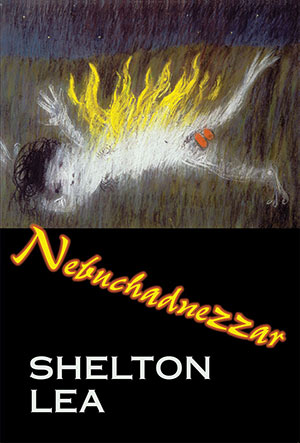

|
Nebuchanezzar : Shelton Lea |
||||
 |

Book Description i am nebuchadnezzar and i am the
king of fitzroy,
my skin is black, my heart is
strong,
you see my gardens there in
gertrude st
beneath the high rise flats,
that’s my babylon,
Shelton Lea is a natural poet of the streets. His Fitzroy or Redfern or Oxford St are as native as the bush is to Lawson and the balladists. The inhabitants of his places arise in their oppression like heroes. He can touch on a fishpond, or love, with delicacy. The themes of his singing meet in his farewell advice to his sons. Nebuchadnezzar pulls no hard, or soft, punches. Shelton
Lea’s work kicks through inner-city streets as well as prison cells
with mattresses ‘thin as two tally-hos’ and a cast of characters real
and imagined such as the incendiary half-crazed half-joyous ‘king’
Nebuchadnezzar reclaiming Fitzroy. Often with incidental rhymes or
euphemistic rhyming slang, he covers a wide territory from elegies to
history - ‘while the berlin wall’s torn down / others, more subtle, are
being raised’ - to gentle love poems, homages and reflections on being
an adoptee with ‘absent d.n.a.’.
His
tone varies from full-throttle public address to quiet introspection to
anarchic defiance and is often seamed with humour. Shelton Lea
exuberantly celebrates and contests an unauthorised untelevised
Australia.
...me and the parkie darkies,
drinking port on australia day
Gig Ryan
Cover art: "Nebuchadnezzar Burning" - Arthur Boyd, ISBN 1876044519 Published 2005 114 pgs $24.95 |
||||
Book Sample
Thanks
to David Sibley / Produced by Robert Price
1. tonight2. confessions 3. australia 4. autistic man 5. barret reid 6. cymbal / monty / light is bold 7. daily news 8. destiny 9. elms 10. gas oven 11. peach melba 12. goulburn 13. mercedes 14. farmer john 15. judith / old son / railway 16. sunroom / lael / harcourt st. 17. trawling 18. orange train 19. tremolo 20. winter is my_ soul 21. nebuchadnezzar Last and First - Shelton Lea: Nebuchadnezzar John Jenkins Australian Book Review, No. 285, October 2006 Nebuchadnezzar is Shelton Lea’s ninth and last book. Sadly, this colourful poet, a well-loved stalwart on the Melbourne reading circuit, died of cancer in May, shortly after its publication. The book begins by surveying a ‘land of fences and diatribes’(‘1988’). It describes the inhabitants of Koori streets: ‘old men with no tomorrows / who rock on broken chairs / and stare at a bitumen sea’ (‘fitzroy’). Lea was an advocate for Aboriginal causes, and his poems often celebrate marginalised people who must summon the desire to survive. This burden of grit grounds life in harsh experience, before a remarkable lift-off. Everything gains altitude (and attitude) in ‘nebuchadnezzar’, the defiant, lush and memorable title poem, in which the ancient king of Babylon, scourge of Judah, builder of the famous hanging gardens, returns to earth as a blackened but unrepentant fire-bringer: ‘i am nebuchadnezzar / ...the king of fitzroy. / ...trees emanate from me / for i’m the king of what’s loud... / aflame i fall through fitzroy skies.’ Lea’s beast-king declares his desires are generous, inclusive, Whitmanesque. He wants to sprout a great tree of heaven from his body, to give ‘shelter to the beasts of the field / and (let) the fowls of heaven find home along with my kin / for its leaves are as broad as the sun’. Another standout poem is ‘at robert drummond’s, beenliegh’, about waking to an artist’s studio, where a quirky bohemian disarray reflects the poet’s own life: ‘a broken piano, / guts bare, / a pillaged muse / at the foot of my bed. / it was come dawn. / the rooster crowed as if a man / imitating a rooster, crowing.’ I like the concise self-parody here. Certainly, ‘playing the poet’ was an amusing game for Lea, his roses full and blown. But there were good biographical reasons for this. He was born in 1946 and orphaned, then ran away from his adoptive parents to live on the streets. He went to a boys’ home and did time in gaol. Although he became a successful writer, publisher and bookseller, freedom was dear to him, the mean streets never far away. Playing the footloose troubadour became a sort of dance, and a mask. With his identity as poet, Lea felt protected. He could outpace life’s ‘narks’, sidestep conventional shackles, skip mundane restraints. In poetry as in life, he liked to lead a merry dance. Lea’s flamboyance expresses a piercing joy - psychic and actual release. But don’t be fooled. It also conceals the thoughtful reserve of one who often had his heels cooled: ‘it is improper to divulge the secret of the stone, / for in the stone lies a stillness / reserved only for stones’ (‘secrets of the stone’). Within his dance, Lea’s touchstone, his dominant tone, is always lyrical; tender and heartfelt: ‘i dream of weeds flowering’ (‘i dream of the soft slide of light’). But not every poem works, particularly where looseness invites failure. In defence, you could say Lea’s ‘artlessness’ is only superficial, tailored to appeal to the disenfranchised, who must also cobble value out of tail ends and tat. The prosecution objects, however, that this is a risky method: what is contrived to appear slipshod can quickly become so. Finally, Lea delivers the innovative and exciting ‘autistic man’, a fractured, collage-like narrative poem about crime, a victim and how it all plays out in the mind. Here, the fine writer in Lea is fully liberated, to dazzling effect. Shelton Lea: Nebuchadnezzar Philip Harvey Blue Dog: Australian Poetry, Vol. 4, No. 8, November 2005 Here is a poetry of hard lessons, a beating out of tough facts into sayings that are smooth as he can make them. Shelton Lea wants to fix it in the least words. This last collection before Lea’s death this year, contains poetry of mature control. Within the personal world of his own experience and its geographic confines (‘where distances cannot be described by maps’), Lea does what he does best: talks out his bravado, his passions, his temperaments, his dreams and his griefs. The moods and status of an adopted child troubled Shelton Lea: it wasn’t that i was
different to them,
they were
different to
me.
that ache, that
longing
in me
was as certain as
the
sky.
(to lael) His poetry dramatises the quandary of identity, sometimes defiantly, sometimes softly. He is someone at odds with those around him, waking each morning to ‘wonder at the source of self.’ Perhaps it explains his praise of other heroic loners like Barrett Reid and Adrian Rawlins, his attraction to groups of fringe dwellers. And in ‘my unknown father’ the unbearable tear between longing (‘i had dreamed that i had actually touched / my unknown father’s shoulder’) and pathos (‘yet we have never met. / i turned to leave the room’) shows up again and again in other relationships. Between the lines of this poetry we see an aging man who believes that kicking against the pricks is still worth the bloody effort. Shelton Lea was always one of the main subjects of his own poetry. When a collection suddenly turns posthumous (he died on the evening of the launch of this very book) [Black Pepper correction: Shelton Lea died later, on Friday 13 May, at home], we see the choices the poet made with a stark focus, from toorak through fitzroy;
from reform
schools
through jails;
from deserts to
seas.
(1988) He knows politics, social inequity and the clash of wills. Yet his poetry is leavened by camaraderie, a shared suffering and a shared survival. He talks to his kind, be they Aborigines, drug-takers, boozers, jailbirds, or fellow authors. Many poems speak directly to ‘bra’, the brother who, though an outsider to society, is an insider to the Australian society of this writing and its memory. He shouts: you don’t hurt me none
bra
for the wind is
different here in
Fitzroy.
it is our land won by fists and
diatribe
where we can stalk
the
remnants of
the
sense of tribe,
where within ourselves we count.
(fitzroy) When the voice gets aggressive or surges into violence, the perspective inevitably turns also from the subject to Lea himself. The connection between lowlife behaviour and stints behind bars cannot be lost on the reader. He is a marijuana-smoking Villon, too ready it seems to up the tension or find a fight. A challenge for any of us is judging when he is aggressor and when the threatened. When is he the criminal and when is he the victim? Lea’s personal voice will brag or swagger, then switch to threat or attack in a moment. His wistful moments sometimes come as a relief, like coming down after a high, or recovering from a punch-up. Then his lyrical talent serves as antidote, as in this subtly ironic portrait, ‘clifton hill’: the paradigm of early afternoons
filled with
birdsong
fishgurgle through
still
ponds,
spiders and their
webs
describe the
sky
in
perfect mathematics
the parabolic curve of nits and
gnats
the Clifton hill
train
sound slap
is sea sound;
the regular
fatwah,
fatwah
of wheels over
sleepers.
This possessive, intense connection with place is expressed in a language of hardship tinged with sentiment. In Oxford Street ‘buses collide with the air.’ Melbourne is ‘all that grey skyline / below the liveried clouds.’ Sitting in Barwon Jail he sees looming in the background
the you yangs
a sullen frown
When the locations for his poems are not breakfast tables or hotel bars, Lea is usually found in the streets or out in the bush somewhere. Polite and proper locations are absent; there is no scent of the salon or the seminar room. We did not hear everything we could have from Shelton Lea. Perhaps that’s true of all poets, but in this collection we notice attempts at reconciliation and personal resolve that are a change in his personal trip. The book is even given the dry dedication: for Leith
who head-butted my
shattered hear
back into shape.
And one measure of the man can be seen in ‘poem from an adoptee’ in which he goes from addressing his Mum, ‘last time i saw you / i glanced at your flatulent arse,’ only, by the end of the same poem, lauding her: for i have lain betwixt your
legs once
as warm and
wonderful as
a pet bear,
and yea i yearn
for the
knowing of you
because you are
never
there,
and yea i bless
you for
my life.
One of Lea’s great strengths as a poet is his unremitting honouring, like John Forbes and others of his peers, of the permanent lower-case. This well-nigh universal practice was anything but when he started his apprenticeship; out of non-capital poetry he has gained huge returns in terms of a natural voice, the true language of the streets, a spacious accommodation for listeners. Other strengths that come especially to the fore in this late book are heartfelt recollections of the Heide art scene, Kings Cross in the 1960s, and the lifestyle of the young and stoned. He has perfected the art of line reduction. Experiment is not his scene. He has trusted to the end his brand of common voice, a combination of the vernacular and the well-earnt truism. At the same time there are certainly weaknesses in some of these poems. For me a particular temptation is his sentimentalism, as distinct from sentiment. Lea can accidentally devalue the beauty or effect, even the meaning, of a poem by trying too hard for the lachrymose, or the merely flowery, effect. I won’t trouble you with examples, suffice to say there are lapses. The other problematic weakness here is that some of the works do not translate from their performance roots onto the page; they may only mean something to those who were there at the time. One of my favourite poems in Nebuchadnezzar is ‘it can only be once’, an expression of acceptance about loss and death that is a fitting way to close. It opens: it can only be once
in your life
that you take the
orange
train
The classical weight of these words holds the attention. The orange train is life’s passage, but also the transport of your death and my death. The poet knows enough though to add that ‘we never travel alone’, a consoling thought when we find out that there is always baggage that is
blues
and the stops
which are stops.
you lug your life
up
and down
so many steps that
you
are fatigued
The poem plays out a series of hard facts, of brutal realities, then softens them with a kind of stoical happiness, made most agreeable in the beautiful lines yet your steps quell the shadows
on behalf of
themselves
This could be enough, self in equilibrium. Acceptance rather than resignation should be a decent end in itself. However the poet then expands the witness of his own life by exclaiming ‘the dream is an absolute’, then concludes with an unexpected analogy of that absolute: like dancing in the meadows
with tough bright
girls
whose dresses swirl
with their
fingertips’ turn.
The poem displays many of the excellent qualities of Lea’s best poetry. There is an ordering of the pragmatic and the emotional into a coherent narrative. His love of the well-placed saying is matched perfectly by his delight in the personalized image. He lets his positive motives win out over his warring negative tendencies. His favourite free verse form gives Lea the freedom to put all these factors together, where they hold together under their combined strain. Dorothy Porter (poet) The Rochester Castle 5/5/2005 It’s
more than
an honour to be
launching Shelton Lea’s fiery and enchanting and ballsy and
heart-achingly humane book – Nebuchadnezzar
– it is a gift. A gift to me. It’s a deep pleasure
to be launching this
book.
Arthur Boyd’s cover painting – ‘Nebuchednezzar burning’ – is a fabulous painting, an unforgettable image – and a fucking hard act to follow. Especially the painting’s burning gobsmacking testicles! reminding me of how few Australian books of poetry whether written by men or women have balls. Even shriveled white balls. Let alone red hot coals balls. But like Boyd’s burning Babylonian king Shelley too is on fire in this book. And this is a book with balls. Red hot ones. With a rhythm and swagger of sweet anger. Shelley tilts at all the serious windmills – Sex, Love, Art and Death – but also the book thrums with a gallantly old fashioned political heart. The poems stroll the streets of Fitzroy and Clifton Hill in Melbourne or Redfern in Sydney – Shelley’s haunts – but the people and landscapes of the poems haven’t been gentrified. Like ‘the parkie-darkies round their campfires / in the dreaming of Redfern’ (1988) or in the poem ‘Fitzroy’ – ‘the streets full of children sucking lollies / next to old men with no tomorrows / who rock on broken chairs / and stare at a bitumen sea’ or the brutally murdered poor mug Paquita in ‘Poem for Paquita’ – ‘but oh / paquita, so often seen on Johnson Street / a bright contessa bestowing your graces equally / so lived, feted in fact. / that you should be made to bleed from your eyes / your nose / your mouth / from being bashed.’ After reading these passionately empathic poems of Shelton’s I felt a kind of shame. I felt as if I’ve been walking these same streets and neighbourhoods with my head up my safe middle-class bum. Like all good poets Shelton Lea has ripped off my eyelids. But there is also the private Shelley coming through these lovely and lyrically intimate poems. The Shelley who can write so movingly of very different men like Adrian Rawlins and Barry Reid. I’d like to now read Shelley’s spot-on and wonderfully sad and droll elegy for Adrian. Read the poem. But I’d like to finish with a poem that for me illustrates so beautifully – not Shelley the friend, not Shelley the charmer or piss-elegant flaneur, not Shelley one of the few people this gutless puritan has shared a joint with, not the Shelley with his marvelous feel for the outlawed and dispossessed but Shelton Lea the poet and artist. Just listen to this terrific poem with its exquisite and subtle homage to Virgil. This poem – and so many other poems in this on fire collection – will long be remembered. Read ‘the aenid becalmed in a pond’. |
{kind=link}